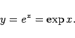
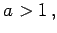
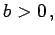
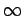
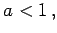
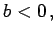
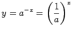
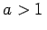

Inhalt Index DeskTop Bronstein

 Funktionen und ihre Darstellung Exponentialfunktionen und logarithmische Funktionen
Funktionen und ihre Darstellung Exponentialfunktionen und logarithmische Funktionen


Die Funktion
liefert das graphische Bild der Exponentialkurve.
Für a = e ergibt sich die natürliche Exponentialkurve
|  | (2.55) |
Die Funktion besitzt nur positive Werte. Für  d.h. für  steigt sie monoton von 0 bis  an. Für  d.h. für  nimmt sie um so schneller monoton von bis 0 ab, je größer |b| ist. Die Kurve verläuft durch den Punkt (0,1) und nähert sich asymptotisch der x-Achse für b > 0 nach rechts und für b < 0 nach links, und zwar um so schneller, je größer |b| ist. Die Funktion  wächst für a < 1 und fällt für .